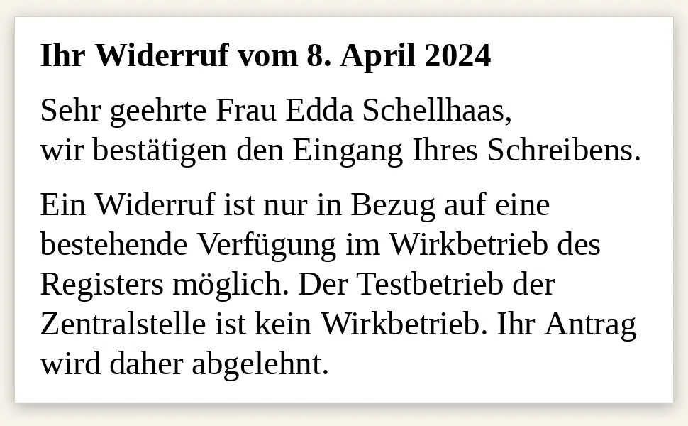

WIDERRUFEN – Antrag abgelehnt.
Die Kallhoven-Akten · Band 2
Hannes Haverkott steht als Spender in einem Register, ohne je unterschrieben zu haben, und sein Widerruf wird abgelehnt.
Öffnet amazon.de in einem neuen Tab.
Wer darf aus dem, was wir sagen, ablesen, was wir wollen?
Ein Jahr lang war Hannes Haverkott in Kallhoven der Mann von den Plakaten. Am ersten Januar steht er im Testbetrieb eines Registers in Bonn, als Spender. Laut Eintrag hat er zugestimmt, erfasst kurz vor Mitternacht. Das Feld "Erfasst durch" ist leer. Hannes widerruft. Die Antwort: Antrag abgelehnt.

Blick ins Buch: die sechste Akte
Rundschreiben der Zentralstelle, gesammelt für die Mappe der Betroffenen. Der Wortlaut: Sehr geehrte Frau Edda Schellhaas, wir bestätigen den Eingang Ihres Schreibens. Ein Widerruf ist nur in Bezug auf eine bestehende Verfügung im Wirkbetrieb des Registers möglich. Der Testbetrieb der Zentralstelle ist kein Wirkbetrieb. Ihr Antrag wird daher abgelehnt. Eine Speicherung personenbezogener Daten im Wirkbetrieb erfolgt nicht. Auskünfte über den Testbetrieb können aus Gründen der Systemsicherheit nicht erteilt werden. Dieses Schreiben wurde maschinell erstellt und ist ohne Unterschrift gültig. Zettel von Corinna Schellhaas, mit Büroklammer am Stapel: 47 Briefe. 47 Mal "Antrag abgelehnt". Davon: 12 Leute, die nie unterschrieben haben, nur Leserbriefe. Ein Mann, der Pit heißt und es auf einer Betriebsversammlung gesagt hat. Ein Brief an meine Mutter. Der oberste. Sie ist im Oktober gestorben. Ich hab für sie widerrufen. Man hat mir geantwortet, dass ich nichts widerrufen kann, was es nicht gibt. Man hat ihr geantwortet. Nicht mir. Bitte nicht wegwerfen. Bitte nicht in die Laube hängen. Bitte aufheben, bis es jemand liest, der etwas ändern kann.
Kallhoven, das Register und alle Personen sind frei erfunden.
Öffnet amazon.de in einem neuen Tab.